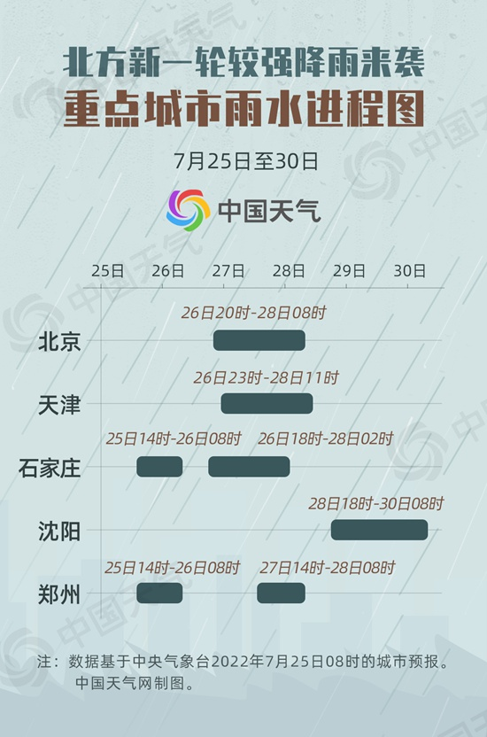

中国天气网讯 眼下，我国北方已经已进入“七下八上”的雨水集中期。今天（7月25日）下午，山西、河北等地遭遇强雷雨云团，局地出现短时强降水。明天夜间起，新一轮较强降水过程又将影响京津冀及河南等10余省区市，且伴有短时强降水及雷暴大风等强对流天气，华北北部局地累计降雨量可达150～220毫米。中国天气网推出重点城市雨水进程图，看看你家的雨什么时候下。
近期，北方降雨变得频繁起来。今天下午15时前后，山西、河南、河北等地遭遇强雷暴云团，出现雷雨大风等强对流天气。中国天气网气象分析师张娟表示，这波降水主要是高空短波槽东移导致的，今天傍晚到夜间将为主要降雨时段，尤其是山西南部、河北中南部、河南、湖北中部等地，对流性较强，需警惕短时强降水，甚至8至10级雷暴大风和冰雹。
明天起至28日，西北地区东部、内蒙古中东部、华北、黄淮、东北地区西部等地又将自西向东迎来一次明显降雨过程，部分地区有大雨、局部暴雨，并伴有雷暴大风等强对流天气。张娟表示，此轮降水过程影响范围较广，覆盖京津冀一带及山东、河南等超10个省区市。27日为这轮过程降雨范围最大、强度最强的一天，华北北部局地累计降雨量可达150～220毫米。
张娟表示，目前在中西伯利亚地区有一个冷涡在活动，东侧有高压阻挡使其在此盘旋，导致频繁有冷空气东移南下，同时副热带高压西北侧有暖湿气流北上，冷暖空气频繁交汇，导致华北、东北等地降雨增多，并容易激发出雷暴大风、冰雹等强对流天气。
